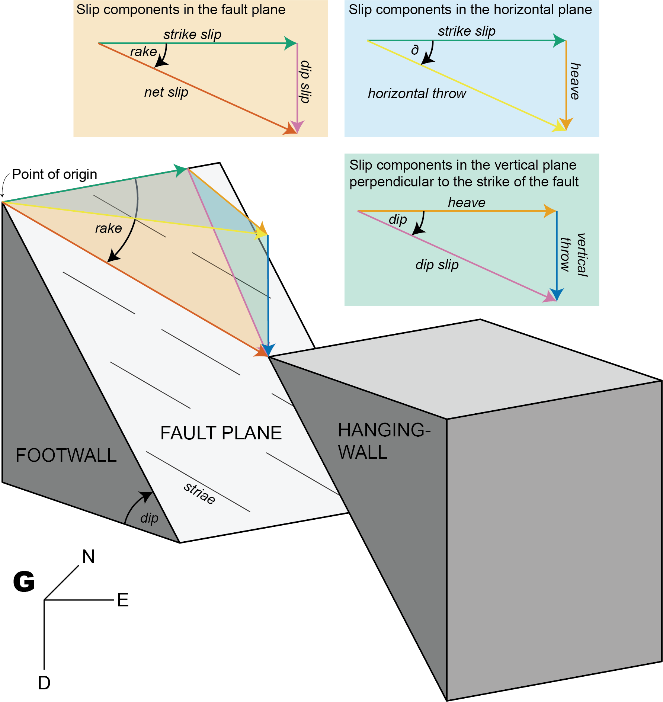

fault_displacements(strikeslip = 2, verticalthrow = -5, heave = 3)This tutorial demonstrates how you can derive displacement components from fault slip.
The offset along a fault can be factorized into several components (Figure 1).

Get different components with trigonometry
Fault orientation (dip angle, dip direction), shortening direction, and horizontal throw
Knowing the horizontal throw (e.g. from plate motion parameters), the remaining components of the displacements along a given fault are as follows. The angle between the direction of horizontal displacement (here assumed parallel to ) and the fault strike is
Slip components in the horizontal plane:
Slip components in the vertical plane perpendicular to the strike of the fault:
Slip components in the fault plane:
Thus, the rake angle describes the ratio between the dip slip and the strike slip component.
Knowing the vertical throw (e.g. from thermochronology or petrology), the (assumed) fault dip, and the direction and amount of horizontal offset, the strike of the fault is as follows:
Knowing the vertical throw (e.g. from thermochronology or petrology), the fault strike (e.g. from geomorphology), and the direction and amount of horizontal offset, the dip of the fault is as follows:
Knowing the vertical throw (e.g. from thermochronology or petrology) and the fault’s dip and rake, the heave, the strike slip, the horizontal throw, and the net slip are as follows:
Fault displacement tensors
Each fault component is a vector describing its direction and length. For instance, the vector of the strike slip is:
Net slip vector
The net slip vector is the sum of the strike slip, heave, and vertical throw vectors:
Principal displacement tensor
The eigenvalues of are the magnitudes of the heave, strike slip, and vertical throw components, and the corresponding eigenvectors are mutually orthogonal unit vectors along these directions. In this principal frame the tensor is diagonal, i.e. the principal displacement tensor :
The tensor can also be defined by the magnitudes of the fault displacements:
Fu <- displacement_tensor(s = 2, v = -5, h = 3)
print(Fu) [,1] [,2] [,3]
[1,] 3 0 0
[2,] 0 2 0
[3,] 0 0 -5
attr(,"class")
[1] "matrix" "array" "ftensor"Orientation tensor
The fault orientation tensor is defined by the fault plane’s orientation (dip direction and dip angle) and the fault’s slip (direction and magnitude):
Fg <- displacement_tensor(s = 2, v = -5, h = 3, dip_direction = 45)
print(Fg) [,1] [,2] [,3]
[1,] 2.12132 1.414214 0
[2,] 2.12132 -1.414214 0
[3,] 0.00000 0.000000 -5
attr(,"class")
[1] "matrix" "array" "ftensor"From principal displacement tensor to orientation tensor
Translate the origin of to the point of measurement and rotate it into the fault orientation, giving :
displacement_tensor_decomposition(Fg, dip_direction = 45)$displacements
dip delta rake verticalthrow horizontalthrow heave dipslip
[1,] 59.03624 56.30993 71.06818 -5 3.605551 3 5.830952
strikeslip netslip
[1,] 2 6.164414
$fault
Fault object (n = 1):
dip_direction dip azimuth plunge sense
45.00000 59.03624 258.69007 -54.20424 -1.00000
$strain_tensor
[,1] [,2] [,3]
[1,] 3.0 -1.5 -1.5
[2,] -1.0 1.0 -1.0
[3,] 2.5 2.5 15.0
$volumetric_strain
[1] 19
$shear_strain
[1] 5.196152